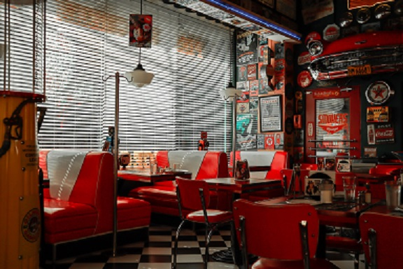

History
A high-schooler who goes by Ore_Father, and his friend, Emerald Titan, worked together at a restaraunt where they served mixed sodas. One day they got creative and started mixing things together, and came up with this. Due to it's unique shade of green, it was quickly dubbed the Emerald Titan. Since then, the restaraunt has changed owners and names, and the Emerald Titan is no longer served there, thus this page bringing it to you and the masses.
